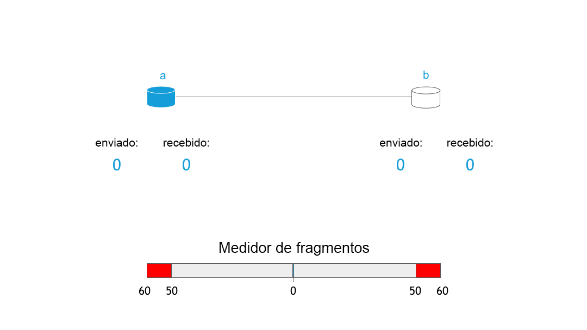

RIF Storage: os primeiros fragmentos
Vojtěch Šimetka & Rinke Hendriksen1 de julho de 2019
Há algumas semanas, publicamos nosso primeiro artigo sobre o armazenamento descentralizado no qual destacamos nossa motivação para desenvolvê-lo e nossa visão. Desde então, muita coisa aconteceu. Entre outras, decidimos o escopo da MVP, sanamos dúvidas cruciais e firmamos uma parceria com a equipe do Ethereum Swarm para ajudar na concretização de nossa visão. Trata-se de uma parceria de grande importância, pois ela nos permitirá aprender a partir das experiências de um dos projetos mais celebrados de armazenamento descentralizado que temos, enquanto fazendo execuções simultâneas no Swarm e RIF Storage.
O início de uma colaboração
Como falamos na publicação anterior: o armazenamento descentralizado é de suma importância para a concretização de uma sociedade mais justa. Graças à sua importância, não surpreende que diversos projetos busquem torná-lo realidade. Apenas citando alguns:IPFS, Storj, Sia, MaidSafe ou SwarmMuito embora esses projetos tenham diferenças significativas, o denominador comum entre eles é a busca por mudar a forma como as informações são guardadas e acessadas ao redor do mundo. Por ter iniciado seus trabalhos mais tarde, o RIF dispõe da vantagem de poder aprender com todos esses interessantes projetos, seus pontos fortes e fracos. Foi o que fizemos.
A partir da análise, destacamos o Swarm como o projeto mais promissor. Ele tem um desenho engenhoso, uma visão forte e, dentre todos os projetos, é o que estabelece uma via muito clara em direção à implantação do armazenamento descentralizado incentivado (falaremos mais adiante sobre este ponto).
Mais ou menos na mesma época, o Swarm estava organizando a Cúpula Swarm 2019, em Madri. Enviamos à reunião nossos representantes Vojtech Simetka e Ale BanzasFoi então que confirmamos nossa hipótese e tivemos uma visão muito mais clara do status do projeto; embora o Swarm esteja bastante definido e claro no campo teórico, exceto pelo armazenamento central, algumas das funcionalidades ainda estão na etapa experimental ou de pesquisa, como o mecanismo de incentivo, por exemplo. O armazenamento descentralizado incentivado dependente fortemente de uma solução de pagamento de segunda camada, uma vez que os micropagamentos são fundamentais para incentivar os nós a se comportarem de forma benéfica à rede. Como nossa equipe tem ampla experiência em soluções de pagamento da segunda camada (RIF Payments e Lumino), identificamos a oportunidade de colaboração com a equipe do Swarm e concretização da visão de armazenamento incentivado.
Assim, a parceria e a via de incentivoforam criadas. Esta via, liderada por Fabio Barone do Swarm e coordenada por Vojtech Simetka do RIF Storage, se destinará a concretizar uma implementação mínima (consulte o escopo da MVP) em direção ao armazenamento de dados incentivado, baseando-se fortemente na pesquisa conduzida pela equipe do Swarm. Ainda, a meta é incorporar suporte a moedas EVM nativas (como RBTC ou ETH) e tokens ERC20 (como o RIF) nos próximos 3 meses.
Fundamentos do RIF Storage e Swarm
Nesta parte, gostaríamos de explicar em alto nível como é o funcionamento do armazenamento descentralizado (neste caso, o Swarm) e qual a contribuição do incentivo. Para ver uma descrição completa, acesse a Documentação oficial do Swarm.
As duas principais ações que os usuários esperam de um armazenamento descentralizado são subir e baixar seus arquivos. Comecemos explicando como funciona o upload. Identificamos as seguintes três etapas:
- Upload do arquivo para um nó
- Preparação do arquivo (fragmentação e criptografia)
- Distribuição dos fragmentos na rede
A primeira etapa é simples: o usuário se conecta a um nó do Swarm em funcionamento e faz o upload
do arquivo, por exemplo, usando o comando swarm up

Estes fragmentos são mapeados em uma árvore de Merkle que proporciona integridade. A imagem abaixo mostra uma possível aparência da árvore:

Nesta árvore, as folhas são povoadas pela hash de cada fragmento e a raiz da árvore representa a hash do arquivo inteiro. Essas hashes são usadas de duas formas: como somas de verificação, assegurando a integridade dos fragmentos, e para indicar sua localização na rede. Os fragmentos são distribuídos com base na distância XOR entre os endereços dos nós e a hash de seu conteúdo. De forma esquemática, a aparência seria:

O processo de download de arquivo segue na maioria das vezes o mesmo algoritmo, mas em ordem reversa. O usuário solicita um arquivo pela hash raiz da árvore de Merkle a partir da rede, que é então traduzida em solicitações de fragmentos (nós de folhas da árvore de Merkle) de nós individuais. Por fim, os fragmentos são decifrados e o arquivo é montado.
Sobre a incentivação
Como dito anteriormente, a incentivação é de grande importância para uma rede como a descrita acima. Por quê? Pense por um momento se você gostaria de ficar com seu laptop conectado e ligado o dia todo para preparar fragmentos, armazená-los e servi-los a partir de seu disco rígido. Não? Bom, provavelmente não é só você. Reflita sobre outra questão: o que motivaria você a servir fragmentos e contribuir para uma rede saudável?
O Swarm define o Protocolo de contabilidade do Swarm (SWAP), que é um sistema “olho por olho” em que os nós contabilizam a quantidade de dados que solicitam e servem. Basicamente, isso significa que, se você me solicitar um milhão de fragmentos, em troca, eu vou lhe servir um milhão de fragmentos. No entanto, há um problema aí em uma rede de armazenamento de arquivos. Esperamos uma variabilidade no uso da rede (posso fazer o stream de um vídeo por 2 horas e deixar o PC ocioso pelas próximas 4 horas), além de diferenças nas capacidades dos nós (um telefone não poderá servir muitos fragmentos, ao passo que um servidor poderá). O SWAP permite que os nós contem seus saldos e, se determinado nó solicitar muitos fragmentos de você, você irá emitir para ele uma ordem de pagamento por intermédio de uma solução de pagamento de segunda camada.

O mecanismo de SWAP é mostrado aqui, em que os nós enviam e recebem fragmentos uns dos outros e o saldo é definido uma vez que o medidor de fragmentos penda excessivamente para uns dos lados.
Ainda que tenha um desenho simples, esse conceito é muito poderoso para uma rede descentralizada. Como ilustrado pela ascensão da Bitcoin e Criptomoedas, os incentivos, quando bem estruturados, podem encorajar os nós a se comportarem de forma desejável à saúde da rede. Neste caso, esperamos que, motivados pela possibilidade de lucro, nós se juntem à rede e sirvam os fragmentos mais desejados de servidores de alta produtividade, o que tornará a rede mais robusta, rápida e difícil de derrubar. É só o que queremos! Além disso, o sistema também permitiria que qualquer pessoa entrasse no ecossistema RSK/Ethereum gratuitamente.
Próximas etapas
Como se pode ver, estamos ocupados tornando realidade tecnologias realmente interessantes. Você pode acompanhar nosso progresso no comitê de incentivo. Se você é um desenvolvedor, ajude analisando uma das questões do GitHub, com um pouco de pesquisa, como no caso da postagem ou, melhor ainda, fale conosco e descubra como podemos trabalhar em parceria. Até a próxima publicação, na qual traremos uma prévia do RIF Storage UI.